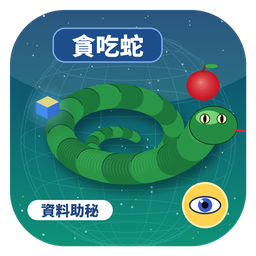
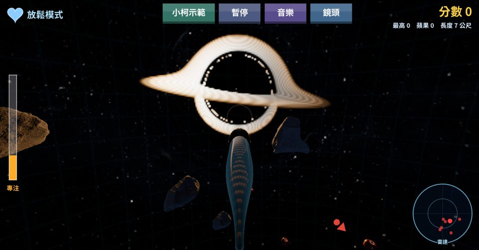
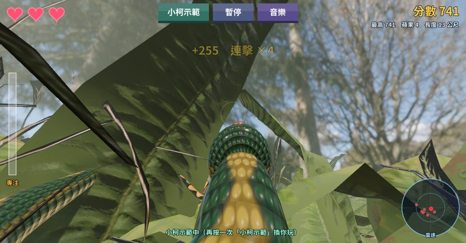
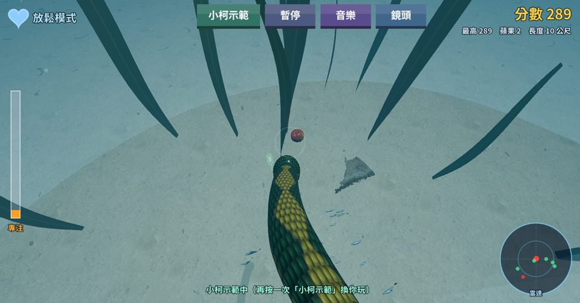
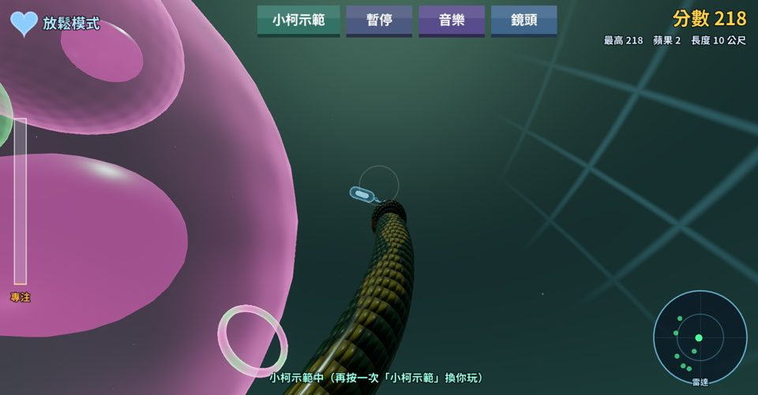
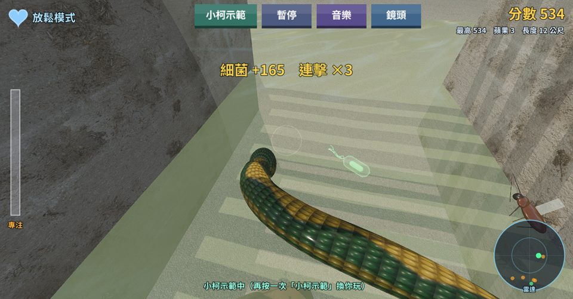
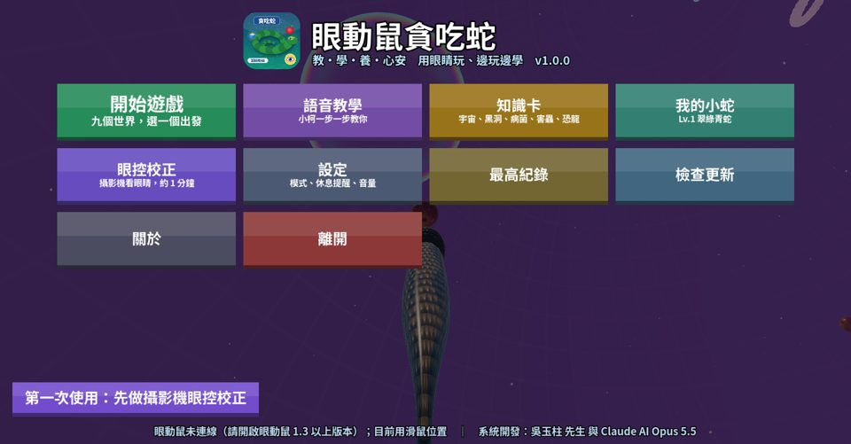

眼動鼠貪吃蛇
教・學・養・心安：像蟻人一樣縮小，在立體的 3D 空間裡用眼睛控制蛇。看著想去的地方，蛇就游過去；邊玩邊學宇宙、黑洞、病菌、害蟲與恐龍的知識。為漸凍人與行動不便的朋友設計。
macOS、線上版、iPhone／iPad、Android 版製作中。






用眼睛玩
眼動鼠（Tobii）、筆電網路攝影機眼控、滑鼠、鍵盤都可以。看著畫面哪裡，蛇就往哪裡轉；看不到眼睛會自動暫停。
眼動鼠（Tobii）、筆電網路攝影機眼控、滑鼠、鍵盤都可以。看著畫面哪裡，蛇就往哪裡轉；看不到眼睛會自動暫停。
九個 3D 世界
量子領域、太陽系、黑洞、微觀花園、恐龍時代、海底、荷花池、水溝、細菌世界。
量子領域、太陽系、黑洞、微觀花園、恐龍時代、海底、荷花池、水溝、細菌世界。
教
小柯機器人台灣華語語音教學，邊講邊示範；隨時可以再聽一次。
小柯機器人台灣華語語音教學，邊講邊示範；隨時可以再聽一次。
學
46 張科普知識卡：太陽系行星、黑洞起源、病菌由來與預防、害蟲定義與防範、恐龍時代。
46 張科普知識卡：太陽系行星、黑洞起源、病菌由來與預防、害蟲定義與防範、恐龍時代。
養
護眼休息提醒與呼吸引導；「我的小蛇」吃得越多越長大，10 種花紋。
護眼休息提醒與呼吸引導；「我的小蛇」吃得越多越長大，10 種花紋。
心安
預設放鬆模式：不會失敗、不扣愛心，慢慢玩、慢慢學。也有三顆愛心的挑戰模式。
預設放鬆模式：不會失敗、不扣愛心，慢慢玩、慢慢學。也有三顆愛心的挑戰模式。
五種鏡頭
追蹤、蛇眼、側面、高空俯瞰、環繞，任何視角都能用眼睛控制。
追蹤、蛇眼、側面、高空俯瞰、環繞，任何視角都能用眼睛控制。
程式內更新
主選單「檢查更新」，Windows 版會自動下載新版並安裝。
主選單「檢查更新」，Windows 版會自動下載新版並安裝。